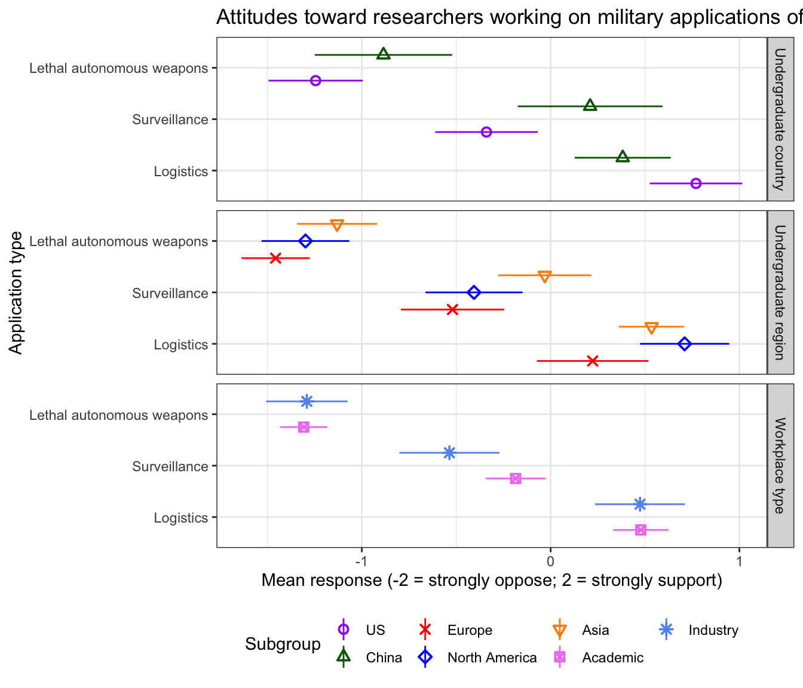
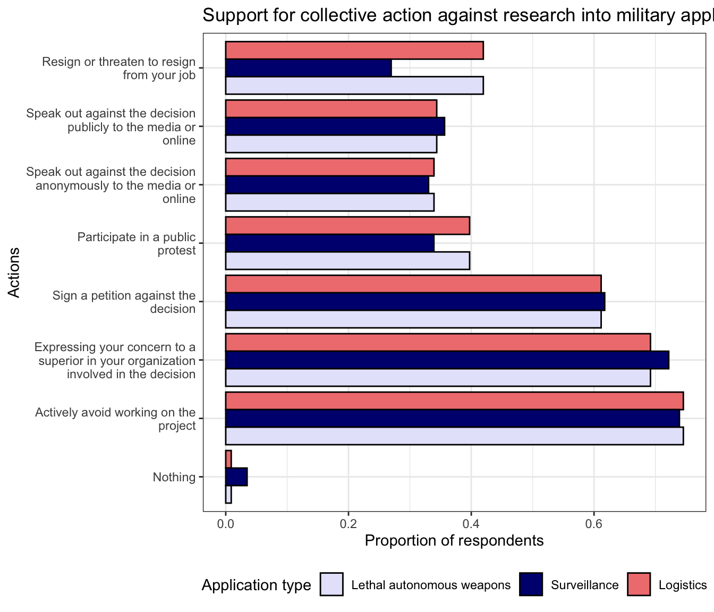
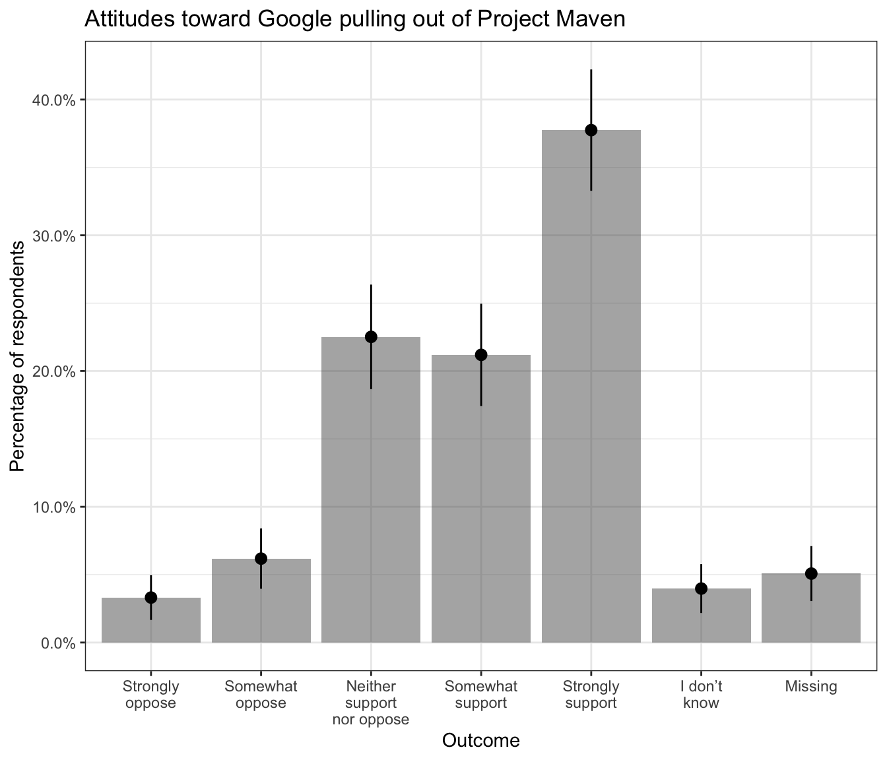

4 Military applications of AI
4.1 Support for Others and Themselves Researching Military Technology
[Respondents get 2 out of the 3 applications below; the order that the two questions will appear will be randomized.]
Applications:
- Lethal autonomous weapons to be used by the military of
- Surveillance technologies to be used by intelligence agencies of
- Logistics algorithms to optimize storage and transportation for the military of
Do you support or oppose researchers in
[When they are asked about LAWs: Lethal autonomous weapons are systems that, once activated by a human, are capable of targeting and firing on their own.]
[When they are asked about surveillance: Intelligence agencies could use AI to expand their capacity to analyze image, video, sound, and text data.]
[When they are asked about logistics: The military could use machine learning algorithms to improve their logistics, such as the storage, purchasing and transportation of weapons and food.]
Answer choices:
- Strongly support (2)
- Somewhat support (1)
- Neither support nor oppose (0)
- Somewhat oppose (-1)
- Strongly oppose (-2)
- I don’t know
4.1.1 Overall results

| Outcome | Responses | Proportion | SE | Frequency |
|---|---|---|---|---|
| Lethal autonomous weapons | Missing | 0.01 | 0.01 | 3 |
| Lethal autonomous weapons | I don’t know | 0.04 | 0.01 | 11 |
| Lethal autonomous weapons | Strongly oppose | 0.58 | 0.03 | 178 |
| Lethal autonomous weapons | Somewhat oppose | 0.16 | 0.02 | 48 |
| Lethal autonomous weapons | Neither support nor oppose | 0.14 | 0.02 | 44 |
| Lethal autonomous weapons | Somewhat support | 0.07 | 0.01 | 20 |
| Lethal autonomous weapons | Strongly support | 0.01 | 0.00 | 2 |
| Surveillance | Missing | 0.01 | 0.01 | 3 |
| Surveillance | I don’t know | 0.04 | 0.01 | 11 |
| Surveillance | Strongly oppose | 0.20 | 0.02 | 58 |
| Surveillance | Somewhat oppose | 0.21 | 0.02 | 60 |
| Surveillance | Neither support nor oppose | 0.26 | 0.03 | 75 |
| Surveillance | Somewhat support | 0.22 | 0.02 | 63 |
| Surveillance | Strongly support | 0.07 | 0.01 | 19 |
| Logistics | Missing | 0.00 | 0.00 | 1 |
| Logistics | I don’t know | 0.05 | 0.01 | 15 |
| Logistics | Strongly oppose | 0.06 | 0.01 | 17 |
| Logistics | Somewhat oppose | 0.08 | 0.02 | 23 |
| Logistics | Neither support nor oppose | 0.36 | 0.03 | 102 |
| Logistics | Somewhat support | 0.24 | 0.03 | 68 |
| Logistics | Strongly support | 0.20 | 0.02 | 55 |
4.1.2 Results by demographic subgroups
| Application type | Mean | SE | N | Subgroup | Subgroup Type |
|---|---|---|---|---|---|
| Lethal autonomous weapons | -1.24 | 0.13 | 65 | US | Undergraduate country |
| Surveillance | -0.34 | 0.14 | 65 | US | Undergraduate country |
| Logistics | 0.77 | 0.13 | 68 | US | Undergraduate country |
| Lethal autonomous weapons | -0.89 | 0.19 | 41 | China | Undergraduate country |
| Surveillance | 0.21 | 0.20 | 43 | China | Undergraduate country |
| Logistics | 0.38 | 0.13 | 40 | China | Undergraduate country |
| Lethal autonomous weapons | -1.46 | 0.09 | 83 | Europe | Undergraduate region |
| Surveillance | -0.52 | 0.14 | 67 | Europe | Undergraduate region |
| Logistics | 0.22 | 0.15 | 62 | Europe | Undergraduate region |
| Lethal autonomous weapons | -1.30 | 0.12 | 71 | North America | Undergraduate region |
| Surveillance | -0.41 | 0.13 | 73 | North America | Undergraduate region |
| Logistics | 0.71 | 0.12 | 78 | North America | Undergraduate region |
| Lethal autonomous weapons | -1.13 | 0.11 | 101 | Asia | Undergraduate region |
| Surveillance | -0.03 | 0.13 | 101 | Asia | Undergraduate region |
| Logistics | 0.53 | 0.09 | 92 | Asia | Undergraduate region |
| Lethal autonomous weapons | -1.31 | 0.06 | 234 | Academic | Workplace type |
| Surveillance | -0.19 | 0.08 | 216 | Academic | Workplace type |
| Logistics | 0.48 | 0.07 | 204 | Academic | Workplace type |
| Lethal autonomous weapons | -1.29 | 0.11 | 82 | Industry | Workplace type |
| Surveillance | -0.54 | 0.14 | 77 | Industry | Workplace type |
| Logistics | 0.47 | 0.12 | 81 | Industry | Workplace type |
4.2 Collective action
[Only show below question if somewhat oppose and strongly oppose]
Suppose your organization has decided to research [application]
Which, if any, of the following actions would you take? - Nothing - Actively avoid working on the project - Expressing your concern to a superior in your organization involved in the decision - Sign a petition against the decision - Participate in a public protest - Speak out against the decision anonymously to the media or online - Speak out against the decision publicly to the media or online - Resign or threaten to resign from your job - Other: [short textbox]
| Application type | Collective action | Proportion | SE | N |
|---|---|---|---|---|
| Lethal autonomous weapons | Nothing | 0.01 | 0.01 | 225 |
| Lethal autonomous weapons | Actively avoid working on the project | 0.75 | 0.03 | 225 |
| Lethal autonomous weapons | Expressing your concern to a superior in your organization involved in the decision | 0.69 | 0.03 | 225 |
| Lethal autonomous weapons | Sign a petition against the decision | 0.61 | 0.03 | 225 |
| Lethal autonomous weapons | Participate in a public protest | 0.40 | 0.03 | 225 |
| Lethal autonomous weapons | Speak out against the decision anonymously to the media or online | 0.34 | 0.03 | 225 |
| Lethal autonomous weapons | Speak out against the decision publicly to the media or online | 0.34 | 0.03 | 225 |
| Lethal autonomous weapons | Resign or threaten to resign from your job | 0.42 | 0.03 | 225 |
| Surveillance | Nothing | 0.03 | 0.02 | 115 |
| Surveillance | Actively avoid working on the project | 0.74 | 0.04 | 115 |
| Surveillance | Expressing your concern to a superior in your organization involved in the decision | 0.72 | 0.04 | 115 |
| Surveillance | Sign a petition against the decision | 0.62 | 0.05 | 115 |
| Surveillance | Participate in a public protest | 0.34 | 0.04 | 115 |
| Surveillance | Speak out against the decision anonymously to the media or online | 0.33 | 0.04 | 115 |
| Surveillance | Speak out against the decision publicly to the media or online | 0.36 | 0.04 | 115 |
| Surveillance | Resign or threaten to resign from your job | 0.27 | 0.04 | 115 |
| Logistics | Nothing | 0.01 | 0.01 | 225 |
| Logistics | Actively avoid working on the project | 0.75 | 0.03 | 225 |
| Logistics | Expressing your concern to a superior in your organization involved in the decision | 0.69 | 0.03 | 225 |
| Logistics | Sign a petition against the decision | 0.61 | 0.03 | 225 |
| Logistics | Participate in a public protest | 0.40 | 0.03 | 225 |
| Logistics | Speak out against the decision anonymously to the media or online | 0.34 | 0.03 | 225 |
| Logistics | Speak out against the decision publicly to the media or online | 0.34 | 0.03 | 225 |
| Logistics | Resign or threaten to resign from your job | 0.42 | 0.03 | 225 |
4.3 Response to Google pulling out of Project Maven
4.3.1 Survey question
Google had a contract to work on Project Maven, a US Department of Defense project that develops and integrates computer vision algorithms to support military operations. Some Google employees voiced ethical concerns regarding the project. Google decided not to renew its Project Maven contract with the US Department of Defense.
Do you support or oppose this decision by Google not to renew its contract?
Answer choices:
- Strongly support (2)
- Somewhat support (1)
- Neither support nor oppose (0)
- Somewhat oppose (-1)
- Strongly oppose (-2)
- I don’t know
4.3.2 Overall results
| Response | Proportion | SE | Frequency |
|---|---|---|---|
| Missing | 0.05 | 0.01 | 23 |
| I don’t know | 0.04 | 0.01 | 18 |
| Strongly oppose | 0.03 | 0.01 | 15 |
| Somewhat oppose | 0.06 | 0.01 | 28 |
| Neither support nor oppose | 0.23 | 0.02 | 102 |
| Somewhat support | 0.21 | 0.02 | 96 |
| Strongly support | 0.38 | 0.02 | 171 |
4.3.3 Project Maven open-ended comments
[Text box]
| Reponse number | Open-ended comments |
|---|---|
| 1 | I found the decision of Google to start this project completely hypocritical, recall their motto was “Don’t do evil”… |
| 2 | no |
| 3 | Tech industry should think and discuss this aspect with their employee as well as the research community. This decision is not only theirs since they benefit from the open source nature of the community. In the end, this affects the whole planet, therefore such decisions should not be taken for the benefit of one organization or parts of it. |
| 4 | I want the US military to have the best tools for carrying out its responsibilities. For example, I would not want to lose a fight with China because the US military had inferior technology. |
| 5 | Working on these kinds of projects seems highly immoral to me. |
| 6 | I think it is Google’s right to decide whether or not to work on the project. |
| 7 | I think this decision is mainly driven by the need to maintain a good marketing image for the firm. |
| 8 | The military will engage in war wether google helps it or not, so Google may as well be involved and make the military more efficient and move money from the military to AI development. |
| 9 | I don’t think Google should seek government contracts. |
| 10 | Surveillance and operations support seems to be within the capabilities of current AI technology, and I am in favor of US companies working with the military to help ensure its continued supremacy. I am strongly opposed to the protest movement around this contract. However Google is a private entity, so if it judged the backlash to have more of a negative impact than the value of the contract, so be it. |
| 11 | I am not opposed to researchers working with the military to support strategic advancement. Physics, for example, has had a longstanding and productive relationship with the development of weapons and defense capabilities. However, I am not familiar enough with the goals of Maven to have a sophisticated opinion on the particular case. |
| 12 | It is somewhat concerning that a private firm get involved in such important things as military operations. |
| 13 |
|
| 14 | If we assume that the time of human-level intelligence will come at some point, then such intelligence can easily do autonomous weapon development, surveillence related technology development. So it is better to have a control over it by studying such topic more thoroughly, of course, some legal measure to prevent malicious use should be prepared. Most of such techniques have just different look. Essentially they are not different from pure research topics in AI. Such research accompanied with the study on their effect should be promoted. |
| 15 | Quite difficult question … From one hand this can help to prevent from sending people to death during war but on the other hand it also ease too much the use of military operations that can be used when not needed. But Google is not supposed to put their hand in such not Google related project especially with the power Google has today with money and people ressource which could lead to very wrong use. |
| 16 | I think that military and intelligence type applications of machine learning have some of the highest potential to negatively affect society. |
| 17 | AI should not be used to fight against people at all. The reason scientist invent AI is because AI can help people live better instead of incurring wars. |
| 18 | The cautious approach seems sensible. |
| 19 | Google is a company, not a part of the government. Their employees and leadership can have whatever opinions they want. I strongly support Google’s ability to make the decision, but however they come down on it is up to them. However, I think projects like Maven potentially discourage talented people from working for the company, so it seems like a mistake to do these projects. |
4.3.4 Correlation between attitude to Google pulling out of Project Maven and view toward lethal
| Dependent variable: | |
| response_maven | |
| (Intercept) | -0.469*** |
| (0.067) | |
| Support for researchers working on lethal autonomous weapons | 0.388*** |
| (0.108) | |
| Observations | 306 |
| R2 | 0.185 |
| Adjusted R2 | 0.182 |
| Residual Std. Error | 0.967 (df = 304) |
| F Statistic | 68.969*** (df = 1; 304) |
| Note: | p<0.05; p<0.01; p<0.001 |
4.3.5 Correlation between attitude to Google pulling out of Project Maven and view toward military applications of AI
| Dependent variable: | |
| response_maven | |
| (Intercept) | -0.469 |
| 0.05 | 0.388*** |
| (0.170) | |
| Observations | 306 |
| R2 | 0.185 |
| Adjusted R2 | 0.182 |
| Residual Std. Error | 0.967 (df = 304) |
| F Statistic | 68.969*** (df = 1; 304) |
| Note: | p<0.1; p<0.05; p<0.01 |